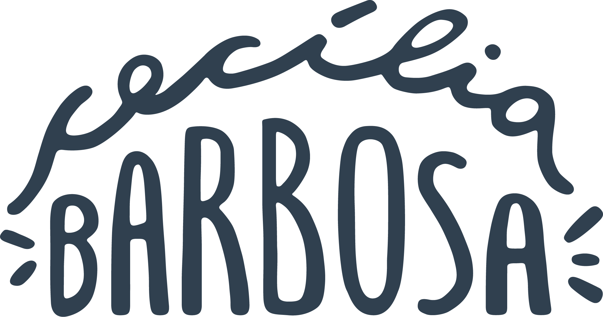

Seja bem-vindo ao mundo da risonha designer potiguar que gosta de piña colada e banho de chuva.
Cecília Barbosa é formada em Design pela UFRN, com habilitação para a área de gráfico e produto, construiu seu portfólio trabalhando com comunicação digital - tanto interna (institucional) como corporativa.
-
sobre mim
Desenvolvi sozinha um projeto de aplicativo mobile para a conclusão da graduação e trabalhei como freelancer antes de cair no universo das agências de comunicação. Atualmente trabalho com endomarketing no planejamento e produção de comunicação interna, eventos, campanhas e programas institucionais.
- meu portfólio
- me mande um email
- me adicione no linked in